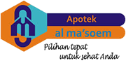

Partnered With




Update terbaru seputar pendidikan, prestasi, dan kegiatan Universitas Ma'soem
Visi Program Studi Teknologi Pangan S1 di Ma'soem University adalah menjadi penyelenggara pendidikan di bidang Teknologi Pangan terbaik pada peringkat nasional dengan karakter unggul—cageur, bageur...
Di era globalisasi ini, penguasaan Bahasa Inggris menjadi sebuah keharusan. Program Studi pendidikan bahasa inggris s1 Ma'soem University hadir dengan pendekatan inovatif...
Memilih jurusan kuliah adalah keputusan besar yang akan membentuk masa depan Anda. Di Ma'soem University, Program Studi S1 Agribisnis hadir dengan komitmen kuat untuk memberikan pendidikan berkualitas...
Apakah Anda memiliki passion dalam Bahasa Inggris dan bercita-cita untuk memberikan dampak signifikan, baik di dunia pendidikan maupun kewirausahaan? Program ini adalah jawabannya...
Dunia pertanian modern kini bukan sekadar menanam dan memanen; ia adalah sebuah ekosistem kompleks yang membutuhkan inovasi, strategi, dan visi jauh ke depan...
Program Studi D3 Komputerisasi Akuntansi Ma'soem University memiliki pandangan jauh ke depan, dengan visi untuk menjadi program studi yang bermutu tinggi di Indonesia pada tahun 2038...
Apakah Anda memiliki minat mendalam pada Teknologi Informasi dan bercita-cita untuk membangun bisnis sendiri? Program Studi Digital Business S1 di Universitas Ma'soem menawarkan jawaban yang relevan...
Masa depan digital menunggu Anda. Di tengah pesatnya perkembangan teknologi, peran Sistem Informasi (SI) menjadi semakin krusial. Program studi ini hadir untuk membekali Anda...
Dunia industri terus bergerak maju, bertransformasi menuju era Industri 4.0 yang serba digital dan terintegrasi. Program Studi S1 Teknik Industri hadir untuk menjawab tantangan ini...
Era Revolusi Industri 4.0 menuntut talenta digital yang adaptif dan inovatif. Program Studi informatika s1 dirancang khusus untuk membekali Anda dengan keterampilan teknologi terkini...
Pencapaian membanggakan bagi Universitas Ma'soem dengan memperoleh akreditasi B dari BAN-PT untuk seluruh program studi. Ini membuktikan komitmen kami terhadap kualitas pendidikan...
Tim mahasiswa Teknik Informatika Universitas Ma'soem berhasil meraih juara 1 dalam kompetisi Hackathon tingkat nasional yang diikuti oleh 50 universitas se-Indonesia...